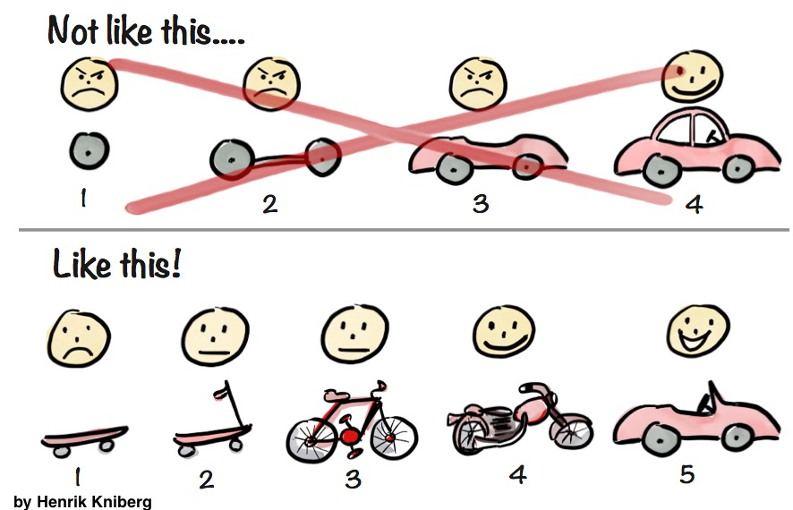
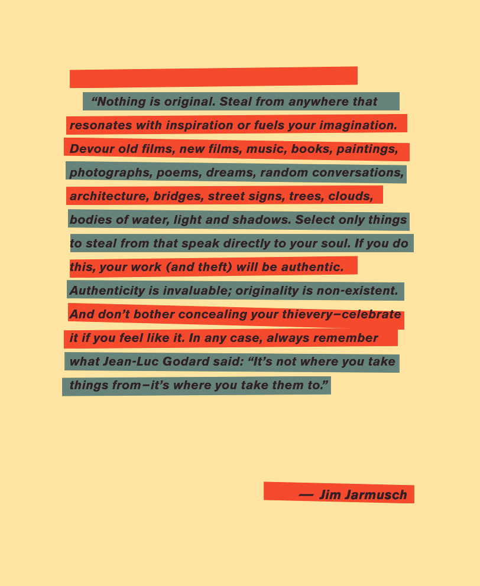

Creative Computing
Joel Gethin Lewis
Week 1: Lecture 1: Introduction
What I'm going to talk about now:
- Introductions.
- Questions.
- My motivations and my aims for the next year.
- What are your aims for the next year?
- Doing this right thing/Ethics.
- Copying/Plagarism.
- Some artists: Agnes Martin, Anni Albers, Lilian Schwarz, Nam June Paik, Bruce Nauman.
- Practice.
- How to criticise well.
- Counting in decimal, unary and binary.
- Memory in computers, storing numbers and words.
- How big things are.
- Really, really, really big numbers.
- Homework assignment!
0. Introductions.
- What do you like to be called?
- How did you get to college today?
- How are you feeling today in one word?
1. Questions?
- What questions do you have?
- What are your concerns? What are you worried about? What do you want to ask but you are
embarrassed?
- All questions allowed!
- 20 minutes alone on post it notes, then double group size every 10 minutes until it's the whole
group.
- This idea came from Zach Lieberman. He does this exercise
at the start of every session of School of Poetic Computation in New
York.
2. My motivations and my aims for the next year. (continued).
2. My motivations and my aims for the next year. (continued).
- Brain exploding and some coding.
- I'm going to reference Wikipedia a lot in this
course, because I think it's one of the best things that humanity has ever made, and I wish
I'd had it when I was young. Also it's free - I hated it when teachers would reference books
that I couldn't afford when I was at university.
2. My motivations and my aims for the next year (continued).
- I only ask that you pay attention and ask questions if you have them. I'd really encourage
you to take the time to watch the films and read the references I put up. Think of them as
cheat codes
to get you to the next level quicker than I did.
- To introduce lots of interesting concepts from many areas so that you know the magic
word to search for if you want to know more. Obfuscation is a BIG problem.
- To teach you how to code, to start you on that path and point you in the
right direction.
- To teach the history of creative computing, and by extension, computing, creativity and
everything (-;.
2. My motivations and my aims for the next year (continued).
- To teach you see problems at many levels (abstraction), break down problems
(decomposition),
find the order in them (pattern
recognition), make solutions using a series of steps (algorithms) and realise that you
might be able to use that solution in lots of areas (generalisation).
- Most of all, to teach you to be autodidacts, and, as previously mentioned, to
blow your mind at least once per lecture.
- First task: what is an autodidact?
2. My motivations and my aims for the next year (continued).
- I'm inspired by other people the most.
- Here are some
artists. Have you heard of them before?
- Here are some more
artists. Have you
heard of them before?
- I'm still learning. Just like you.
- You are not children, just less experienced (in some things!) than me. That's it.
- My name is Joel, please call me that. Not Sir or Mr.Lewis or anything else. Apart from Cyber or
JGL.
- This year I want to get better at 3D software - does anyone know about that? Does anyone know Blender?
2. My motivations and my aims for the next year (continued).
3. What are your aims for the next year? Some suggestions...
- Taking some inspiration from the Bauhaus, I think materiality is interesting. What does
materiality mean? I hear it all the time at universities.
- The Bauhaus also had the best parties, do we want to do that too?
- This year is not a break, it's about practice. We ared going to do projects all the time. What
do you want to make? What are the issues that matter to you? Why do they matter to you?
- What kind of utopia do you want? I think I want university everywhere, forever, for everyone.
Sometimes teaching, sometimes learning.
3. What are your aims for the next year? Some suggestions... (continued)
- Caitlin Morris has some advice for you all:
"Remind students that technical exercises can be the root of a bigger idea. I’ve had
students submit small
sketches along with their introductory exercises under the prompt of “if I worked on this
for another
month/year, what
could it become?”. Some really beautiful ideas emerge and I’ve found that it makes students
more
concept-attentive in their weekly projects, as well as providing some groundwork for larger
final projects."
3. What are your aims for the next year? Some suggestions... (continued)
- I think this is great advice for how to make progress to bigger goals:
3. What are your aims for the next year? Some suggestions... (continued)
- You are going to go further faster than anyone else here.
- Faster than the BSc, the MSc, the PhD's or the staff.
- The reason is that you already have a practice.
- Creative computing knowledge can be applied to ANY practice. See the MIT Computational Thinking
book to see how
researchers in many fields are learning computational knowledge that even computer scientists
don't use, as
they don't have the orginal subject knowledge.
- Do we have any textiles people here? Textlies is the beginning of computing! The Jacquard Loom
was the first programmable object. Also, Annie Albers is one of my favourite artists. How could
we be inspired by her practice?
3. What are your aims for the next year? Some suggestions... (continued)
- Again, that MIT Computational Thinking book has a large section about the importance of
computing to every area
of science. I want to prove that for craft and design and art.
- Do you want to do the same? This is what we are all here to do.
- We are now a community.
3. What are your aims for the next year? Some suggestions... (continued)
- Introduction exercise: "Name Circle".
- Energy exercise: "Clap Circle".
- Do you know any more of these? Send me them if you do.
3. What are your aims for the next year? Some suggestions... (continued)
- Circle is always the way I want to do things when we discuss, but I’m going to bend it into a
half circle when I do presentations, but I’m going to sit in the middle.
- Sit where you like on chairs or on the floor or whatever. If you need to go to the bathroom or
take a movement
it’s fine, you don’t have to ask.
- Please silence
your devices so everyone else finds it easier to pay attention. Saying that, I actively
encourage you to use
devices when you are in this community whenever you want to.
- Part of what you are going to do together is to
write notes on what is going on so you can share them.
- It’s up to you to organise things.
3. What are your aims for the next year? Some suggestions... (continued)
- I’m going to record
my screen and camera as a backup, which you can use if you want. Come to me if you want video
files
on the
Slack.
- I will also post my lecture slides, they will always be online on the Github. That’s how
I’m
delivering
them now.
- The complete slides for the course aren’t available yet as they don’t exist. I’m going to
write as we
go because this is the first time that this is happening.
- I need you to help future DIPLOMATS!
- What
do we call
ourselves? What is our motto? Secret handshake?
- It’s up to us in this community to make it kind. I need your help to do that.
3. What are your aims for the next year? Some suggestions... (continued)
- Slack is the primary means of communication for this course.
- Everyone say hi to me in Slack!
- If you want to use Slack to build a document for the lecture
that’s fine. Or
Google Docs? Or EtherPad?
Or
Studio Code "Live Share" (now
out of
beta)?
3. What are your aims for the next year? Some suggestions... (continued)
- YOU ALL
are going to produce the wiki for the course!
- They are going to make notes and share
them together, I
will also add content to the wiki.
- There will be prizes for best writer, editor, illustrator, photographer,
videographer, musician and influencer/hype person at the end of the year.
- Demo the course wiki, make a new page for companies to visit.
- Who has a GitHub ID already?
3. What are your aims for the next year? Some suggestions... (continued)
- I want someone who doesn't have a GitHub ID to pair up with someone who has and the person who
has show the person who hasn't how to sign up. Everyone do that. Give me your usernames on the
Slack when you have done it and I'll add you to the GitHub project for the whole term.
- Which companies do you want to visit? You must perfect moving as a silent unit! You could make a
patch to thank
people you visit? See Trevor Paglen's Symbology
work for some inspiration.
- Which galleries do you want to visit? Make a page for that.
3. What are your aims for the next year? Some suggestions... (continued)
- Do we want to do social media?
- What is our course Code of Conduct (CoC)? From p5js? Let's discuss.
- Do we want to make a Wikipedia page for the course? For each other? How do we get the Diplomats
nickname in there? Do we have to publish an article somewhere? On Twitter? Is this even allowed?
3. What are your aims for the next year? Some suggestions... (continued)
- I'd like to set up an audio reactive visual posse/crew/gang that start doing visuals for club
nights and the
like, lets start running our own!
- Or a TV station?
- Nintendo Labo club?
- Thoughts?
3. What are your aims for the next year? Some suggestions... (continued)
- What about a trip?
- What about a retreat?
- What about here?
4. Doing this right thing/Ethics.
5. Copying/Plagarism.
- 
- This is the official
UAL page on referencing and academic misconduct.
5. Copying/Plagarism (continued).
- The main thing I take from it is this section:
"Throughout your studies, you will be
encouraged to reference the
work of other artists, writers, designers or performers in your work. Tutors will expect to
find reference to
the sources of your ideas in supporting documentation such as sketchbooks or initial drafts.
This is an
essential and valuable part of your education. As long as the source of the ideas is
acknowledged, this is not
plagiarism."
6. Some artists: Agnes Martin, Anni Albers, Lilian Schwarz, Nam June Paik, Bruce Nauman.
- What follows are a few artists that I love and think that you might be interested in. There are
many more, as
we saw earlier.
- Perhaps a page of references might be an interesting page to add to the wiki?
6. Some artists: Agnes Martin, Anni Albers, Lilian Schwarz, Nam June Paik, Bruce Nauman
(continued).
- Agnes
Martin
-
"To progress in life you must give up the things that you do not like. Give up doing
the things that
you do not like to do. You must find the things that you do like. The things that are
acceptable to your
mind."
6. Some artists: Agnes Martin, Anni Albers, Lilian Schwarz, Nam June Paik, Bruce Nauman
(continued).
- Anni
Albers
-
"Being creative is not so much the desire to do something as the listening to that
which wants to be
done: the dictation of the materials."
6. Some artists: Agnes Martin, Anni Albers, Lilian Schwarz, Nam June Paik, Bruce Nauman
(continued).
6. Some artists: Agnes Martin, Anni Albers, Lilian Schwarz, Nam June Paik, Bruce Nauman
(continued).
- Nam
June Paik
-
"Skin has become inadequate in interfacing with reality. Technology has become the
body's new membrane
of existence."
6. Some artists: Agnes Martin, Anni Albers, Lilian Schwarz, Nam June Paik, Bruce Nauman
(continued).
- Bruce
Nauman
-
"And then what makes the work interesting is if you choose the right questions."
7. Practice.
- What is Practice?
- When I thought about it, it helped me alot.
- I like it because the word has many meanings, like many words. What meanings does it have for
you? Have you head it at UAL alot?
- What is a practice? What is your practice? What is the question that moves you in a direction?
Or in no direction?
- My
presentation about the
future that I also presented in Oslo recently.
8. How to criticise well.
8. How to criticise well (continued).
- Getting
rid of value words by Airea D. Matthews.
- We will use Post It notes for crits, giving them to the subject afterwards.
- I have a strict "don't touch other peoples computers" rule. I'm never going to type for you or
fix something for you by doing it for you.
- Please use the reading
list,
please use my links if you buy. The library should be getting them all, cc me in on an email to
them if it
isn't working. Lets also discuss alternative ways of reading the material.
- Why reading is important.
9. Counting in decimal, unary and binary.
- Counting is using groups of symbols to represent quantities or amounts.
- Let's count to 100 in Decimal. When do
we need a extra digits?
- Let's count to 10 in Unary.
- Let's count to 20 in Binary. When
do we need an extra digit?
- What's the biggest number you can count to on your fingers? On your fingers and toes?
10. Memory in computers, storing numbers and words.
- Computers use binary to represent everything in memory.
- A bit is a Binary digIT.
- A byte is eight bits. (BEight).
- A kilobyte is 1,024 (2^10) bytes, mostly.
- A megabyte is 1,048,576 (2^20) bytes, mostly.
10. Memory in computers, storing numbers and words (continued).
- One megabyte is approximately one minute of 128 kbit/s MP3 compressed music.
- One megabyte is six seconds of uncompressed CD audio.
- One megabyte is a typical English book volume in plain text format (500 pages × 2000
characters per page).
- The human genome consists of DNA representing 800 MB of data. The parts that differentiate
one person from another can be compressed to 4 MB!
10. Memory in computers, storing numbers and words (continued).
- There are different ways of storing numbers and words in computers, as whole these values
are known as Data types.
- Whole numbers or Integers are stored as ints. E.g. 0, 5,
-567.
- Numbers which are in between whole numbers are stored as Floating Points or
floats. E.g. 3.142 or -5.66343.
- As these numbers are stored in certain amounts of memory, if they get too big (or negative,
or precise) the computer can run out of memory to store them, or overflow. This is bad. See
the Y2K bug.
10. Memory in computers, storing numbers and words (continued).
- You can also store individual characters of the alphabet as chars.
- However, there are different encodings of characters - ASCII and Unicode for example - which allow
different character sets to be displayed.
- You can store words (multiple characters) in strings - which are actually just lists of
chars.
- Another name for lists are arrays.
- Strings are one dimensional arrays.
We'll be discussing two dimensional arrays next time.
- Data can be stored as fixed values (constants) or
values that can change (variables).
11. How big things are.
- Thanks to Terrence J. Sejnowski and his
article on Edge.org for the following examples.
- How many seconds are there in a lifetime? 10^9 seconds.
A second is an arbitrary time unit, but one that is based on our experience. Our visual
system is bombarded by snapshots at a rate of around 3 per second caused by rapid eye
movements called saccades. Athletes often win or lose a race by a fraction of a second.
If you earned a dollar for every second in your life you would be a billionaire.
However, a second can feel like a minute in front of an audience and a quiet weekend can
disappear in a flash. As a child, a summer seemed to last forever, but as an adult,
summer is over almost before it begins. William James speculated that subjective time
was measured in novel experiences, which become rarer as you get older. Perhaps life is
lived on a logarithmic time scale, compressed toward the end.
11. How big things are (continued).
- What is the GDP of the world? $10^14.
A billion dollars was once worth a lot, but there is now a long list of
multibillionaires. The US government recently stimulated the world economy by loaning
several trillion dollars to banks. It is difficult to grasp how much a trillion dollars
($10^12) represents, but several clever videos on YouTube (key words: trillion dollars)
illustrate this with physical comparisons (a giant pile of $100 bills) and what you can
buy with it (10 years of US response to 9/11). When you start thinking about the world
economy, the trillions of dollars add up. A trillion here, a trillion there, pretty soon
your talking about real money. But so far there aren't any trillionaires.
11. How big things are (continued).
- How many synapses are there in the brain? 10^15.
Two neurons can communicate with each other at a synapse, which is the computational unit
in the brain. The typical cortical synapse is less than a micron in diameter (10^-6
metres), near the resolution limit of the light microscope. If the economy of the world
is a stretch for us to contemplate, thinking about all the synapses in your head is mind
boggling. If I had a dollar for every synapse in your brain I could support the current
economy of the world for 10 years. Cortical neurons on average fire once a second, which
implies a bandwidth of around 10^15 bits per second, greater than the total bandwidth of
the internet backbone.
11. How big things are (continued).
- How many seconds will the sun shine? 10^17 seconds
Our sun has shined for billions of years and will continue to shine for billions more.
The universe seems to be standing still during our lifetime, but on longer time scales
the universe is filled with events of enormous violence. The spatial scales are also
immense. Our space-time trajectory is a very tiny part of the universe, but we can at
least attach powers of 10 to it and put it into perspective.
11. How big things are (continued).
- Artwork: Powers of Ten by the Eames Office
12. Really really really big numbers